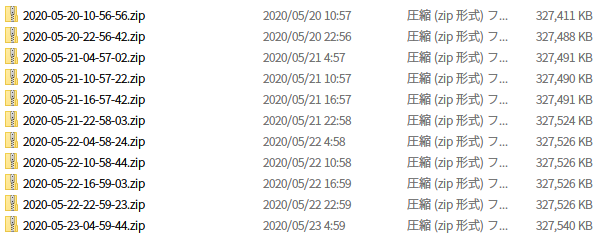
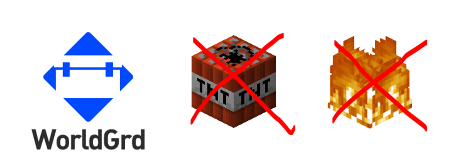
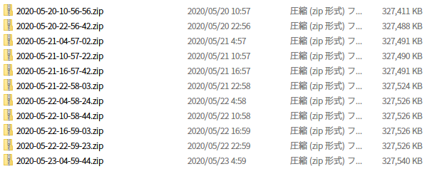
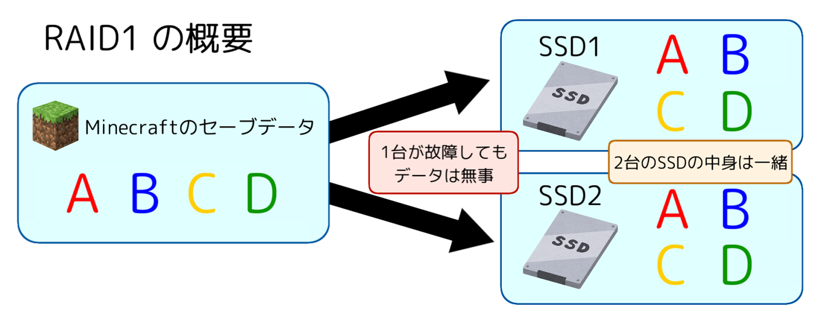

荒らし対策
我々の一番の願いは皆様に安心しておしゃサーバーでプレイしていただくことです。
Minecraftサーバーでの安全は荒らし対策にかかっています。
このページではおしゃサーバーでの安全への取り組みを少しご紹介致します。
当サーバーではWorldGuardプラグインを導入しており、TNTなどの爆発による地形破壊を無効化しております。
また、炎の延焼も無効化しているため、荒らしだけでなく不慮の事故による火災も未然に防ぐことができます。
もちろんWorldGuardで建築物を保護することが可能ですので、ぜひご活用ください。
爆発や炎の延焼の無効化により荒らし行為は難しくなっていますが、それでも万一荒らされた場合、最大でも6時間前のデータにロールバックすることで被害を最小限に抑えられるようにしています。

↑実際のバックアップの様子
Minecraftサーバーでの安全は荒らし対策にかかっています。
このページではおしゃサーバーでの安全への取り組みを少しご紹介致します。
WorldGuard プラグイン
当サーバーではWorldGuardプラグインを導入しており、TNTなどの爆発による地形破壊を無効化しております。
また、炎の延焼も無効化しているため、荒らしだけでなく不慮の事故による火災も未然に防ぐことができます。
もちろんWorldGuardで建築物を保護することが可能ですので、ぜひご活用ください。
自動セーブ・自動バックアップ
おしゃサーバーでは15分に一回のオートセーブ、6時間に一回のオートバックアップを行っています。爆発や炎の延焼の無効化により荒らし行為は難しくなっていますが、それでも万一荒らされた場合、最大でも6時間前のデータにロールバックすることで被害を最小限に抑えられるようにしています。

↑実際のバックアップの様子
大切なデータを守る取り組み
おしゃサーバー運営部が何よりも大切にしてるものは我々と皆様の財産であるゲームデータです。
ここではおしゃサーバーでのデータを守る技術と取り組みをご紹介します。
おしゃサーバーではサーバー機のストレージを2台のSSDでミラーリング(RAID1)しております。
これにより、もしも1台のSSDが故障した場合でももう1台のSSDから復旧、サービスを継続することができます。
また、2台のSSDが同時に故障することの無いよう導入時期をずらして稼働時間に差を作っています。

↑実際のRAID構成済みSSD
これは、RAIDでは防ぐことのできない人為的なミスによるデータの消失への対策です。
データはimg形式で保存され、同容量のSSDを用意して書き込むことでいつでももとの状態に戻すことができます。
また、軽量の外付けHDDに保管しているため、万一の災害時の対応をしやすくしています。

↑実際のバックアップ用ディスク
ここではおしゃサーバーでのデータを守る技術と取り組みをご紹介します。
サーバーSSDのRAID1によるミラーリング
おしゃサーバーではサーバー機のストレージを2台のSSDでミラーリング(RAID1)しております。
これにより、もしも1台のSSDが故障した場合でももう1台のSSDから復旧、サービスを継続することができます。
また、2台のSSDが同時に故障することの無いよう導入時期をずらして稼働時間に差を作っています。
ストレージ全体のイメージファイルの保存
SSDのRAIDに加え、SSD全体のイメージファイルを一週間に一回、自動で生成し、専用の外付けHDDに保存しています。これは、RAIDでは防ぐことのできない人為的なミスによるデータの消失への対策です。
データはimg形式で保存され、同容量のSSDを用意して書き込むことでいつでももとの状態に戻すことができます。
また、軽量の外付けHDDに保管しているため、万一の災害時の対応をしやすくしています。
まとめ
この記事を通じておしゃサーバー運営部のセキュリティとデータ保護に対する情熱を感じていただければ幸いです。
今後とも皆様により安心して楽しんでいただけるよう努力してまいります。
今後とも皆様により安心して楽しんでいただけるよう努力してまいります。